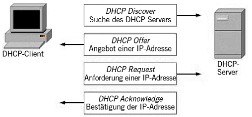
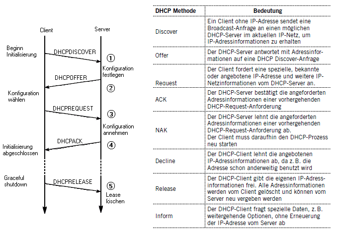
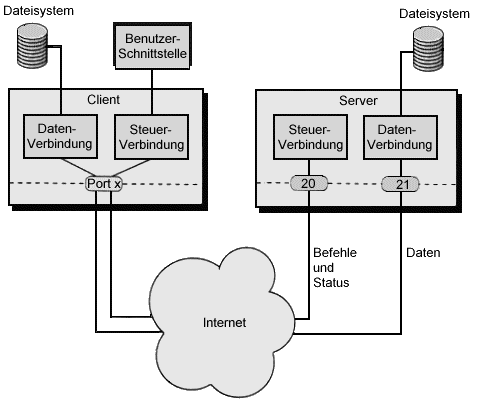
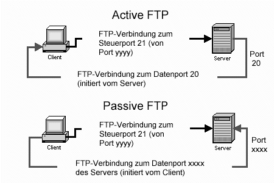
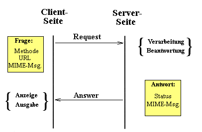

<!DOCTYPE html>
<html>
<head>
<meta charset="utf-8">
<meta name="viewport" content="width=device-width, initial-scale=1">
<meta NAME="robots" CONTENT="all">
<meta NAME="revisit-after" CONTENT="10 days">
<meta NAME="Reply-To" CONTENT="webmaster@netzmafia.de">
<meta NAME="keywords" CONTENT="LAN WAN TCP/IP Computernetze Ethernet Vernetzung Router Hub Switch Protokolle">
<meta NAME="description" CONTENT="Praxisorientierte Einführung in den Aufbau und die Funktionsweise von Computernetzen.">
<title>Grundlagen Computernetze</title>
</head>
<BODY TEXT="#000000" BGCOLOR="#FFFFFF" LINK="#0000FF" ALINK="#FF0000" VLINK="#FF00FF">
<CENTER><TABLE BORDER=0 WIDTH="90%" >
<TR><TD VALIGN=TOP ALIGN=LEFT></TD>
<TD VALIGN=TOP ALIGN=RIGHT><H2>Grundlagen Computernetze</H2> 
<BR><B><I>Prof. Jürgen Plate</I></B></TD></TR>
</TABLE></CENTER>
<HR>

<h1 align=center>Höhere Protokolle</h1>

In diesem Abschnitt werden beispielhaft einige höhere Protokolle für 
Internet-Dienste skizziert. Bemerkenswert ist, daß viele dieser Protokolle
aus wenigen Anweisungen in lesbarem Klartext bestehen. Der Grund hierfür ist
unter anderem, daß man diese Protokolle zum Testen einer Verbindung
durch eine Telnet-Verbindung auf einem bestimmten Port (z. B. 80 für HTTP)
von Hand nachvollziehen kann. Durch den Klartext ist auch die Fehlersuche
bei einer Verbindung ohne großen Aufwand und ohne spezielle Tools
möglich. Die vorgestellten Protokolle werden hier nicht bis ins Detail
ausgebreitet, es soll Ihnen nur eine Vorstellung über die Arbeitsweise
der Internet-Protokolle vermittelt werden.
<P>

<A NAME="9.1"></A>
<H2>DHCP</H2>
Um in einem IP-basierten Netzwerk Kontakt mit anderen Rechnern aufnehmen zu
können, benötigt jeder Computer eine eigene, eindeutige IP-Nummer.
Je größer das Netzwerk wird und je mehr verschiedene Rechnerplattformen darin
vereint sind, desto höher ist der Aufwand für den Administrator:
Wann immer ein neuer Rechner in das Netzwerk integriert wird, muß er 
zuerst konfiguriert werden. Ändert einer der zentralen Server seine
Adresse oder wird er auf eine andere Maschine verlegt, müssen alle
Netzwerk-Client umkonfiguriert werden. Einen zweiter Aspekt bringen sogenannte
"nomadische" Systeme, z. B. Laptops, die irgendwo ins Netz eingebunden werden
sollen. Dabei bieten sich verschiedene Zugangsmöglichkeiten für
Rechner in das Intranet:
<UL>
<LI>Anschluß über einen Ethernet-Switch
<LI>Zugang durch drahtlose Netze (und evtl. einen Router zum drahtlosen Subnetz)
<LI>Zugang vom Internet über eine Firewall
<LI>Modemzugang über einen Modemserver
</UL>
<P>
Günstig wäre es, wenn der Zugang eines Rechners zum Netz folgenden Anforderungen 
genügen würde:
<UL>
<LI>automatisiert, d. h. ohne manuellen Eingriff
<LI>authentifiziert, d. h. nur zugelassene Systeme erhalten Zugriff
<LI>vollständig (Netz-, System- und Anwendungskonfiguration)
<LI>standardisiert, d. h. für alle Systeme in einheitlicher Form
</UL>
<P>
Eine Lösung für dieses Problem bietet <B>DHCP</B> (Dynamic Host Configuration
Protocol). Dieser Dienst ermöglicht es, einem Client dynamisch eine
IP-Nummer und andere Netzwerkparameter, wie den Netzwerknamen, die 
Gatewayadresse, etc., zuzuweisen, ohne daß der Administrator den Rechner 
überhaupt zu Gesicht bekommt. DHCP ist dabei völlig unabhängig von der 
eingesetzten Plattform. Das heißt, es kann sowohl Windows-Maschinen wie 
auch zum Beispiel Unix-Rechner mit den Netzwerkeinstellungen versorgen. 
Um ein Mindestmaß an Verfügbarkeitsanforderungen zu erfüllen, 
sollte natürlich mehr als nur ein DHCP-Server vorhanden sein, da sonst 
dessen Ausfall die Funktion sämtlicher Clienten beeinträchtigt. 
Im Heimnetzwerk übernimmt in der Regel schon der DSL-ROuter die Funktionen
eine DHCP-Servers. Auch WLAN-Accesspoints können als DHCP-Server arbeiten.
<p>
<b>Hinweis:</b> Die Adressverteilung mittels DHCP wird nur für Endgeräte
empfohlen. Hosts, die das Netz eigentlich bilden, wie Router,
Switches, Server etc. sollten unbedingt feste IP-Adressen erhalten.
<P>
Das in RFC 2131 definierte Protokoll DHCP arbeitet nach dem Client-Server-Modell. 
Als Server wird ein Programm bezeichnet, das den Pool der zu vergebenden Nummern 
verwaltet und sich darum kümmert, daß eine Nummer nicht zweimal vergeben wird. 
Der Client ist ein Programm auf dem lokalen Rechner, das zunächst den 
Server selbsttätig im Netz suchen muß und ihn anschließend darum bittet, eine 
IP-Nummer zuzuteilen.
Die Grundfunktion des Servers ist recht einfach aufgebaut: über eine 
Konfigurationsdatei teilt der Administrator ihm mit, welche Adreßbereiche
er für die Weitergabe an Client zur Verfügung hat. Fragt ein Client nach 
einer IP-Adresse, dann muß der Server zunächst nachsehen, ob noch eine Adresse frei
ist. Diese freie IP-Nummer liefert er an den Client aus. Gleichzeitig
muß er eine Datei (Leases-File) führen, in der er protokolliert, welche Adresse 
bereits an wen vergeben ist. Bei der Adreßvergabe sind drei verschiedene 
Modi einstellbar:
<UL>
<LI> <B> Automatic Allocation</B>: Fordert ein Client eine IP-Nummer
an, wird sie ihm auf unbegrenzte Zeit zugeteilt, solange noch Adressen 
zur Verfügung stehen. Sind alle Adressen verbraucht, kann kein neuer Client
mehr konfiguriert werden, auch wenn ein Teil der zuvor bedienten 
Rechner im Moment gar nicht eingeschaltet ist. 
<LI> <B> Manual Allocation</B>: In dieser Betriebsart geht es nur darum,
Verwaltungsaufwand zu minimieren. In der Konfigurationsdatei ist
für jeden Client im Netzwerk eine IP-Nummer fest zugeordnet. Der
Server ist lediglich für die Auslieferung der Adresse an den Client
verantwortlich.
<LI> <B> Dynamic Allocation</B>: Jeder Client bekommt auf Anfrage eine
IP-Nummer, solange im definierten Pool noch Einträge frei sind. Der Unterschied 
gegenüber der <I>Automatic Allocation</I> besteht darin, daß die IP-Nummer
nur für eine bestimmte, maximale Zeitspanne (<I>Lease-Time</I>) 
gültig ist und vom Client innerhalb dieser Zeit zurückgegeben werden kann, 
wenn sie nicht mehr benötigt wird.  Als einzige der drei Betriebsarten
erlaubt <I>Dynamic Allocation</I>, kleine IP-Nummern-Pools mit einer
großen Anzahl von Rechnern zu teilen. Einzige Voraussetzung:
nicht alle Maschinen dürfen gleichzeitg laufen. Damit lassen sich auch
Computer, die eher selten ins Netzwerk integriert werden, wie Laptops,
zuverlässig mit einer IP-Nummer versorgen. Wird der Rechner vom Netz 
getrennt, kann die Adresse für eine andere Station verwendet werden.
In dieser Betriebsart werden die meisten DHCP-Server betrieben.
</UL>
<P>
DHCP ist eine Erweiterung des BOOTP-Protokolls und konkurriert in seiner
Basisfunktionalität mit RARP. Gegenüber BOOTP zeichnet es sich vor 
allem durch die Flexibilität bezüglich der abfragbaren Konfigurationsparameter 
und durch das Konzept der <I>Lease</I> aus, d. h. die Möglichkeit eine 
Information dem Client gegenüber als nur begrenzt gültig zu markieren. 
Damit wird die Flexibilität bei Veränderungen der Netztopologie und weiterer
Konfigurationsparameter gewahrt. Ferner ist die Unterstützung von großen
Netzen, in denen nichts stets alle Systeme zugleich aktiv sind, mit limitierten
Pools von Adressen möglich. Durch die Rückwärtskompatibilität 
zum PDU-Format von BOOTP ist die Verwendung existierender BOOTP-Relay-Agents in 
Subnetzen ohne DHCP-Server gewahrt.
<P>
<UL>
<LI>Der DHCP-Client, der eine IP-Adresse braucht, sendet ein
DHCPDISCOVER-Paket an einen DHCP-Server. Da die Adresse des Servers noch nicht
bekannt ist, wird dieses IP-Paket an die Broadcast-Adresse 255.255.255.255 
mit der Absender-Adresse 0.0.0.0 geschickt (Phase 1). 
<LI>Anhand der Identifikation des Client im Paket können sich einige (oder ein 
einzelner) DHCP-Server entscheiden, dem Client die gewünschte IP-Adresse sowie
andere Konfigurationsinformation in Form eines DHCPOFFER-Pakets
zuzuteilen. (Vor der Vergabe können und sollten die Server die
Konfliktfreiheit bzgl. der Adresse mittels ICMP-Ping oder ARP prüfen.)
Der DHCP-Server antwortet ebenfalls mittels Broadcast. In diesem Angebot
werden dem Client eine gültige IP-Adresse und weitere IP-Netzinformationen
mitgeteilt (Phase 2).
<LI>Der Client kann sich nun aus den Antworten eine für ihn geeignete
aussuchen und bestätigt dies gegenüber dem Server durch ein
DHCPREQUEST-Paket (Phase 3). Entscheidungsparameter können z. B. die
Leasedauer (t<SUB>l</SUB>) oder die Menge der angebotenen Konfigurationsinformation.
<LI>Bei korrekter Information im DHCPREQUEST bestätigt der Server die Lease
durch ein DHCPACK-Paket (Acknowledge), womit die Konfiguration abgeschlossen ist (Phase 4).
</UL>
<P>
<CENTER></CENTER>
<P>
Neben den Adressinformationen wird auch noch ein "Transaction Identifier" übertragen. 
Diese zufällig erstellte ID ist eine Art Bearbeitungsnummer, die eine bestimmte 
Transaktion (d. h. DHCP-Adressvergabe) eindeutig kennzeichnet. Insbesondere, wenn
viele Clients gleichzeitig eine IP-Adresse anfordern, müssen diese Anfragen unterschieden 
werden können. Da noch gar keine individuellen Adressen bekannt sind, ist zu diesem
Zeitpunkt eine Unterscheidung nur mittels dieser Bearbeitungsnummer
möglich. Auch können neben der IP-Adresse weitere Informationen übermittelt
werden, beispielsweise die Subnetzmaske, der Name der eigenen Domain, die Adresse 
eines Routers (Default Gateway) und die Adresse eiens Nameservers.
<P>
Bevor die IP-Adresse verwendet wird, sollte der Client ihre Einzigartigkeit
durch ein <I>Gratuitious ARP</I> prüfen. Sollte der Client die angebotene 
Adresse ablehnen wollen, teilt er dies durch DHCPDECLINE-Paket dem Server und
beginnt nach einer kurzen Wartefrist erneut mit Phase 1. Sobald der Client die 
Bestätigung durch DHCPACK erhalten hat, ist er für die Überwachung 
der Lease-Dauer selbst verantwortlich. Insbesondere kennt das Protokoll auch keine
Methode, einem Client die Lease zu entziehen.
<P>
Nach welchen Kriterien (IP-Adressbereich, Subnetzmaske) die DHCP-Clients Adressen 
erhalten, muss der Netzwerkadministrator festlegen und im DHCP-Server konfigurieren. 
Die Adressinformationen sind zudem nicht unbegrenzt gültig, sondern müssen
in regelmäßigen Abständen erneuert oder bestätigt werden. Die durch die Administratoren 
festgelegte Zeitdauer der Gültigkeit wird als "Lease Time" bezeichnet. Sie beträgt 
mehrere Stunden bis mehrere Tage.
<P>
Vor Ablauf der Lease-Dauer (meist nach der Hälfte der Zeit = 0,5 * t<SUB>l</SUB>) 
sollte der Client durch einen erneuten Durchgang durch Phase 3 versuchen, die
Lease vom selben DHCP-Server verlängert zu bekommen. Gelingt ihm das
nicht, kann er vor endgültigem Ablauf der Lease-Dauer (meist nach ca. 0,8 *
t<SUB>l</SUB>) die Phase 1 nochmals durchlaufen, um eine Verlängerung bzw.
Neuausstellung der Lease (eventuell von einem anderen Server) zu erhalten.
Die vorzeitige Aufgabe einer Lease sollte der Client dem Server durch ein
DHCPRELEASE mitteilen, um den Pool freier Adressen möglichst groß und
den Vergabestand im Server möglichst akkurat zu halten.
Alle Zustandsübergänge im Client sind in folgender Abbildung
zusammengefaßt. Die Komplexität hat in der Vergangenheit zu einigen
Fehlimplementierungen mancher Client-Software geführt, die jedoch aufgrund
der großen "Toleranz" im Protokoll meist keine kritischen Auswirkungen
hatten.
<P>
<CENTER></CENTER>
<P>
Der Vorgang "Lease erneuen" kann beliebig oft wiederholt werden, solange der 
Client die Adresse noch braucht und der Server nichts dagegen hat. Unter 
Umständen verweigert der DHCP-Server die Erneuerung. Falls die 
gewünschte Adresse für den DHCP-Server inakzeptabel ist, schickt 
er dem Client ein ablehnendes DHCPNAK. Der Client beginnt dann von Neuem.
<p>
Was passiert, wenn der Client den DHCP-Server nicht mehr erreichen kann, 
der ihm seine IP-Adresse zugeteilt hat? Bevor sein Lease verfällt, 
soll der Client den DHCPREQUEST nicht mehr direkt an den DHCP-Server 
schicken, sondern es broadcasten. Somit hören alle DHCP-Server 
wieder mit. Wenn Failover richtig funktioniert, wird der Backup-Server 
jetzt das Lease erneuen. Kommt hingegen keine Antwort oder nur ein 
DHCPNAK, muß der Client wieder von vorne beginnen, und ein 
DHCPDISCOVER broadcasten usw. Das ist insofern schlecht, als er nun 
höchstwahrscheinlich eine ganz andere IP-Adresse bekommt. Bestehende 
Verbindungen, die noch die alte IP-Adresse verwenden, müssen abgebaut werden.
<P>
Beim Einsatz spezieller IP-Geräte, z. B. für KNX, für Kopplung mit SPS-Systemen,
für das Ansprechen von Sensoren/Messinterfaces oder für VoIP-Systeme ist jedoch 
die manuelle Konfiguration des DHCP-Servers oft unvermeidbar. Hier gilt es, sicher 
die Adressinformationen zu managen, einzuteilen und den Geräten zuzuweisen. Daher 
sind diese grundlegenden Kenntnisse Voraussetzung für die sichere Arbeit im IP-Netz.
Deshalb kann der DHCP-Server auch eingeschränkt werden - bis hin zu einer Liste von
"erlaubten" MAC-Adressen. Man kann auch eine gemischte Versorgung der Rechner
im Netz vorsehen, teils mit festen IP-Adresse (z. B. Server mit "Außenwirkung"),
teils mit dynamisch zugewiesenen Adressen. Teilweise sind viele der o. g. Geräte auch
standardmäßig auf DHCP konfiguriert und nicht immer ist der Bediener vor Ort in
der Lage, eine IP-Adresse nebst Netzmaske usw. zu konfigurieren. In solchen Fällen
ist es sinnvoll, die Konfiguration auf den DHCP-Server zu verlagern.
<P>

<A NAME="9.2"></A>
<H2>SMTP - Simple Mail Transfer Protocol</H2>
Der urspüngliche Standard für SMTP - niedergelegt im RFC 821 -
stammt aus dem Jahr 1982 und gilt, abgesehen von einigen
Erweiterungen, nach wie vor. Dieser RFC 821 legte ein Minimum an
Schlüsselworten fest, die jede Implementation von SMTP (d. h. die
Verkörperung von SMTP in einem Programm) beherrschen muß. Dies
sind:
<P>
<TABLE ALIGN=CENTER WIDTH="80%" BORDER=1 CELLPADING=3>
<TD VALIGN=TOP>Kommando</TD><TD VALIGN=TOP>Argument</TD><TD VALIGN=TOP>Beschreibung</TD></TR>
<TR>
<TD VALIGN=TOP>HELO</TD><TD VALIGN=TOP>Systemname</TD>
<TD VALIGN=TOP>Beginn, Name des sendenden Systems</TD>
</TR>
<TR><TD VALIGN=TOP>MAIL</TD><TD VALIGN=TOP>From: Absenderadresse</TD>
<TD VALIGN=TOP>Beginn der Übermittlung</TD></TR>
<TR><TD VALIGN=TOP>RCPT</TD><TD VALIGN=TOP>To: Empfängeradresse</TD>
<TD VALIGN=TOP>Adressat der E-Mail</TD></TR>
<TR><TD VALIGN=TOP>DATA</TD><TD VALIGN=TOP>&nbsp;</TD>
<TD VALIGN=TOP>Brieftext, Ende durch eine Zeile mit "."</TD></TR>
<TR><TD VALIGN=TOP>HELP</TD><TD VALIGN=TOP>Topic</TD>
<TD VALIGN=TOP>Hilfestellung</TD></TR>
<TR><TD VALIGN=TOP>VRFY</TD><TD VALIGN=TOP>Mailadresse</TD>
<TD VALIGN=TOP>Mailadresse verifizieren</TD></TR>
<TR><TD VALIGN=TOP>EXPN</TD><TD VALIGN=TOP>Mailadresse</TD>
<TD VALIGN=TOP>Mailadresse expandieren (z. B. Liste)</TD></TR>
<TR><TD VALIGN=TOP>RSET</TD><TD VALIGN=TOP>&nbsp;</TD>
<TD VALIGN=TOP>Senden abbrechen, Zurücksetzen</TD></TR>
<TR><TD VALIGN=TOP>NOOP</TD><TD VALIGN=TOP>&nbsp;</TD>
<TD VALIGN=TOP>nichts tun</TD></TR>
<TR><TD VALIGN=TOP>QUIT</TD><TD VALIGN=TOP>&nbsp;</TD>
<TD VALIGN=TOP>Verbindung beenden</TD></TR>
</TABLE>
<P>
Die Verbindung eines MTA zu einem anderen läßt sich nachstellen:
<P>
<PRE>
	telnet lx-lbs.e-technik.fh-muenchen.de smtp
	Trying 129.187.106.196...
	Connected to lx-lbs.e-technik.fh-muenchen.de.
	Escape character is '^]'.
	220 lx-lbs.e-technik.fh-muenchen.de Smail3.1.28.1 #1 ready at Sun, 25 Feb 96 23:15 MET
	helo www.netzmafia.de
	250 lx-lbs.e-technik.fh-muenchen.de Hello www.netzmafia.de
	mail from: paulsen@fitug.de
	250 <paulsen@fitug.de> ... Sender Okay
	rcpt to: holm@lx-lbs.e-technik.fh-muenchen.de
	250 <holm@lx-lbs.e-technik.fh-muenchen.de> ... Recipient Okay
	data
	354 Enter mail, end with "." on a line by itself
	Hallo Holm,
	
	zu Deiner Frage bezeglich der Reinigung von Morgensternen
	wollte ich Dir nur den Tip geben, dazu reine Kernseife zu
	verwenden.
	Damit ist die Drecksarbeit im Handumdrehen erledigt.
	
	Beste Gruesse, Paulsen
	.
	250 Mail accepted
	quit
	221 lx-lbs.e-technik.fh-muenchen.de closing connection
	Connection closed by foreign host.
</PRE>
<P>
Beim Verbindungsaufbau meldet sich der lokale MTA mit einer
"Begrüßungszeile". 
Der lokale empfangende MTA wird mit "HELO"
angesprochen und als sendender MTA der des Systems
www.netzmafia.de angegeben.  Der lokale MTA antwortet mit
einem Zahlencode, der dem Sender-MTA signalisiert, daß seine
geforderte Aktion in Ordnung geht. Die Klarschrift nach dem
Zahlencode dient nur der besseren Lesbarkeit für den Menschen
(z. B. für den, der Fehler suchen muß). 
Auf "MAIL FROM:" folgt die Adresse des Absenders, und 
auf "RCPT TO:" die des Empfängers. Auf
das Schlüsselwort "DATA" folgt schließlich der 
ganze Brief, also sowohl die Kopfzeilen, als auch der Text. Der 
Empfänger-MTA wird
solange Text erwarten, bis ihm der Sender-MTA über eine Zeile,
die nur einen Punkt enthält, signalisiert, daß der Brief zu Ende
ist. Nach der letzten Bestätigung des Empfänger-MTAs könnte der
Sender den nächsten Brief übermitteln, wiederum beginnend mit
"MAIL FROM:". Nach dem Empfang des Briefes kopiert der lokale MTA
den Brief in die Postfach-Datei des Empfängers.
<P>
Der RFC 821 legte noch einige weitere Schlüsselworte fest, z. B.
"EXPN" für expand, welches eine Unterstützung von Mailing-Listen
erlaubt, oder "VRFY" für verify, mittels dessen eine Bestätigung
der Empfänger-Adresse gefordert werden kann. Eine ganze Reihe von
RFCs haben den Standard für SMTP erweitert. Die erweiterte
Version heißt nun offiziell ESMTP (für Extended SMTP).
Hinzugekommen sind beispielsweise Schlüsselworte für die
Unterstützung von 8bit-Briefen (z. B. solche mit Umlauten), und
die Möglichkeit eine maximale Größe für Briefe, die empfangen
werden, festzulegen.
<P>
Auf Arbeitsplatzrechnern, die normalerweise nicht ständig eingeschaltet 
sind, erfordert E-Mail spezielle Betriebsweisen. Falls der Rechner in ein 
lokales Netz integriert ist, bietet sich eine Lösung über den
Netzwerkserver oder einen speziellen Mail-Server an. Es gibt auch die
Möglichkeit, direkt vom PC-Kompatiblen oder Macintosh auf eine
Unix-Mailbox zuzugreifen. Voraussetzung dafür ist, daß der
Arbeitsplatzrechner direkt mit TCP/IP am Ethernet angeschlossen ist
oder über eine Modem-Verbindung per PPP-Protokoll angebunden
ist. Die Mailer sind lokale Programme am PC oder Mac. Der Vorteil
ist, daß man in der PC-Umgebung bleibt, und Dateien direkt aus
dem PC-Directory-System versandt werden können. Die Mailbox des
Benutzers liegt dabei selbst auf einem Mail-Server (Postfach). Der
Zugriff vom PC auf das Mailsystem des Servers wird über
den Client/Server-Mechanismus realisiert. Protokolle, die dieses
erlaubt, sind POP ('Post Office Protocol') und IMAP ('Internet Message 
Access Protocol').
<P>

<A NAME="9.3"></A>
<H2>POP</H2>
POP, genauer POP 3, ist die bisher noch gebräuchlichste Methode, um E-Mails 
von einem Provider zu empfangen, wenn der eigene Rechner nicht ständig mit dem
Internet verbunden ist. Das Prinzip und der Funktionsumfang von POP sind einfach:
<UL>
<LI> Die für den Empfänger bestimmten E-Mails landen beim
Provider im Spool-Verzeichnis und müssen dort vom
Empfänger abgeholt werden.
<LI> Der Provider stellt einen POP-Server zur Verfügung, welcher die
Schnittstelle des POP-Clients auf dem Empfänger-Rechner
darstellt. Der lokale POP-Client kommuniziert mit dem POP-Server
beim Provider. Über ihn werden die vorhandenen E-Mails
angeboten.
</UL>
<P> 
Eine Kommunikation zwischen dem POP-Client und dem POP-Server beim
Provider kann schematisch beispielsweise so aussehen :
<P> 
<I>Client:</I>  Hast Du neue E-Mails für mich?<BR>
<I>Server:</I>  Ja, insgesamt fünf Stück!<BR>
<I>Client:</I>  Liste mir die Absender auf!<BR>
<I>Server:</I>  Meier, Mueller, Huber, Schulze<BR>
<I>Client:</I>  Zeige die E-Mails an!<BR>
<I>Server:</I>  ((Zeigt E-Mails an))<BR>
<I>Client:</I>  ((Speichert E-Mails ab))<BR>
<I>Client:</I>  Lösche alle angezeigten E-Mails<BR>
<I>Server:</I>  ((Löscht alle angezeigten E-Mails))<BR>
<P> 
Wenn ein Client über POP3 Nachrichten abrufen möchte, baut er eine
TCP-Verbindung über Port 110 auf. Ist die Verbindung zustande gekommen, sendet 
der Server eine Begrüßungsmeldung. Die weitere Kommunikation zwischen 
beiden Rechnern erfolgt über Kommandos, die aus drei oder vier Zeichen langen 
Wörtern (mit einem oder mehreren Argumenten mit bis zu je 40 Zeichen) bestehen.
Antworten enthalten einen Status-Indikator und ein Statuswort sowie optionale 
Informationen. Es gibt zwei Status-Indikatoren:
<UL>
<LI>Positiv: +OK 
<LI>Negativ: -ERR
</UL>
Eine POP3-Verbindung durchläuft mehrere Stufen. Nach der 
Server-Begrüßung beginnt der "Authorization State". Der Client muß sich 
gegenüber dem Server identifizieren. Nach erfolgreicher Authorisierung beginnt 
der "Transaction State". Es werden alle Operationen zum Bearbeiten von Mails 
ausgeführt. Sendet der Client das Kommando QUIT, beginnt der "Update State". 
Der Server beendet die TCP-Verbindung und führt die vom Client im 
"Transaction State" angeforderten Änderungen durch.
<P>
Viele POP3-Server haben zusätzlich einen Inaktivitäts-Timer. Laut 
Spezifikation muß dieser auf mindestens zehn Minuten eingestellt sein. 
Jedes Kommando des Clients setzt den Timer zurück. Ist der Timer abgelaufen, 
wird die TCP-Verbindung beendet, ohne in den "Update State" zu wechseln - eventuelle
Änderungen werden auf dem Server nicht gespeichert.

<P>Nachdem der POP3-Client eine Verbindung zum Server aufgebaut hat, sendet dieser 
eine einzeilige Begrüßungsmeldung beliebigenInhalts, z. B.:
<PRE>
<I>Server:</I> +OK POPEL-3 server ready
</PRE>
Dabei handelt es sich bereits um eine Antwort des Servers, daher beginnt die 
Meldung immer mit einer positiven Bestätigung (+OK). Die Verbindung befindet 
sich nun im Zustand "Authorization". Der Client muß sich jetzt gegenüber 
dem Server identifizieren. Dies erfolgt über die beiden Kommandos USER und PASS.
<P>
<TABLE ALIGN=CENTER WIDTH="80%" BORDER=1 CELLPADING=3>
<TR><TH COLSPAN=3>Kommandos im "Authorization State"</TD></TR>
<TR>
<TD VALIGN=TOP>Kommando</TD><TD VALIGN=TOP>Argument</TD><TD VALIGN=TOP>Beschreibung</TD></TR>
<TR>
<TD VALIGN=TOP>USER</TD><TD VALIGN=TOP>Name</TD>
<TD VALIGN=TOP>Das Argument identifiziert eine Mailbox.</TD>
</TR>
<TR>
<TD VALIGN=TOP>PASS</TD><TD VALIGN=TOP>String</TD>
<TD VALIGN=TOP>Der String enthält ein Mailbox-spezifisches Passwort.</TD>
</TR>
<TR>
<TD VALIGN=TOP>QUIT</TD><TD VALIGN=TOP>-</TD>
<TD VALIGN=TOP>Beendet die Verbindung.</TD>
</TR>
</TABLE>
<P>
Die Kombination aus den Kommandos USER und PASS ist am gebräuchlichsten.
Dabei werden die jeweiligen Parameter im Klartext an den Server gesendet. 
Ein Beispiel: Der Username für das Postfach soll "plate", das Passwort 
"XYZ1230" heißen. In diesem Fall wird folgender Authentifizierungsdialog ablaufen: 
<PRE>
<I>Client:</I> USER plate
<I>Server:</I> +OK name is a valid mailbox 
<I>Client:</I> PASS YXZ1230
<I>Server:</I> +OK plates's maildrop has 9 messages (1600 octets)
</PRE>
Bei falschen Angaben verweigert der Server den Zugang und gibt eine
Fehlermeldung aus. Mögliche Dialoge bei falschem Usernamen:
<PRE>
<I>Client:</I> USER plat<B>o</B>
<I>Server:</I> -ERR sorry, no mailbox for plato here
</PRE>
Oder bei einem falschen Passwort:
<PRE>
<I>Client:</I> USER plate
<I>Server:</I> +OK name is a valid mailbox 
<I>Client:</I> PASS tralala
<I>Server:</I> -ERR invalid password
</PRE>
Die Tatsache, daß alle Dialoge im Klartext über das Netz abgewickelt
werden, birgt ein hohes Sicherheitsrisiko. Mit dem Kommando APOP sieht die 
aktuelle POP3-Definition eine wesentlich sicherere Option zur Authentifizierung 
vor. Diese beschreibt in einem Kommando den User und identifiziert ihn mit einer
Einweg-Hash-Funktion. 
<P>
Hat sich der Client beim Server identifiziert, wechselt die Verbindung in den 
"Transaction State". Dem Client stehen nun eine Reihe von Kommandos zur 
Behandlung der Mails zur Verfügung:
<P>
<TABLE ALIGN=CENTER WIDTH="80%" BORDER=1 CELLPADING=3>
<TR><TH COLSPAN=3>Kommandos im "Transaction State"</TH></TR>
<TR><TD VALIGN=TOP>Kommando</TD><TD VALIGN=TOP>Argument</TD><TD VALIGN=TOP>Beschreibung</TD></TR>
<TR>
<TD VALIGN=TOP>STAT</TD><TD VALIGN=TOP>-</TD>
<TD VALIGN=TOP>Liefert die Anzahl der gespeicherten Mails und die Größe der 
Mailbox zurück (in Byte).</TD>
</TR>
<TR>
<TD VALIGN=TOP>LIST</TD><TD VALIGN=TOP>Nummer</TD>
<TD VALIGN=TOP>Liefert die Nummer und Größe (in Bytes) aller Mails zurück. 
Wird als Argument eine Mail-Nummer angegeben, wird nur die Größe 
dieser Mail ausgegeben.</TD>
</TR>
<TR>
<TD VALIGN=TOP>RETR</TD><TD VALIGN=TOP>Nummer</TD>
<TD VALIGN=TOP>Gibt die Mail mit der als Argument übergebenen Nummer aus.</TD>
</TR>
<TR>
<TD VALIGN=TOP>DELE</TD><TD VALIGN=TOP>Nummer</TD>
<TD VALIGN=TOP>Löscht die Mail mit der übergebenen Nummer.</TD>
</TR>
<TR>
<TD VALIGN=TOP>NOOP</TD><TD VALIGN=TOP>-</TD>
<TD VALIGN=TOP>Bewirkt die Antwort "+OK". Dient zur Aufrechterhaltung der 
Verbindung, ohne daß ein Time-Out auftritt.</TD>
</TR>
<TR>
<TD VALIGN=TOP>RSET</TD><TD VALIGN=TOP>-</TD>
<TD VALIGN=TOP>Setzt die aktive Verbindung zurück. Noch nicht ausgeführte 
Änderungen werden verworfen.</TD>
</TR>
<TR>
<TD VALIGN=TOP>QUIT</TD><TD VALIGN=TOP>-</TD>
<TD VALIGN=TOP>Beendet die Verbindung und führt alle gespeicherten Änderungen aus.</TD>
</TR>
</TABLE>
<P>
Der Server führt das Kommando DELE nicht unmittelbar aus. Die entsprechenden 
E-Mails werden als gelöscht markiert und erst bei Beenden der Verbindung 
endgültig vom Server gelöscht. Hat man eine Nachricht zum Löschen 
gekennzeichnet, möchte dies jedoch rückgängig machen, führt 
man das Kommando RSET aus. Der Server verwirft alle noch nicht ausgeführten 
Operationen.<BR>
Sendet der Client das QUIT-Kommando, wechselt die Verbindung in den "Update State". 
Der Server trennt die TCP-Verbindung und führt alle gespeicherten 
Änderungen aus.
<P>
Neben den hier vorgestellten, für eine minimale Implementation ausreichenden 
Kommandos gibt es noch weitere, die von den meisten Clients und Servern unterstützt 
werden. Details hierzu finden Sie in RFC1725.
<P>
Im folgenden Beispiel sehen Sie den Ablauf einer POP3-Verbindung. Der Client 
identifiziert sich gegenüber dem Server und ruft eine Liste der gespeicherten 
E-Mails ab. Danach werden die Nachrichten einzeln heruntergeladen, auf dem Server 
zum Löschen gekennzeichnet, und die Verbindung wird beendet.
<PRE>
<I>Server:</I> +OK POP3 server ready
<I>Client:</I> user plate
<I>Server:</I> +OK
<I>Client:</I> pass xyz1230
<I>Server:</I> +OK
<I>Client:</I> LIST
<I>Server:</I> +OK 3 messages (520 octets)
<I>Server:</I> 1 120
<I>Server:</I> 2 190
<I>Server:</I> 3 210
<I>Server:</I> .
<I>Client:</I> RETR 1
<I>Server:</I> +OK 120 octets
<I>Server:</I> &lt;<I>... sendet Nachricht 1</I>&gt;
<I>Server:</I> .
<I>Client:</I> DELE 1
<I>Server:</I> +OK message 1 deleted
<I>Client:</I> RETR 2
<I>Server:</I> +OK 190 octets
<I>Server:</I> &lt;<I>... sendet Nachricht 2</I>&gt;
<I>Server:</I> .
<I>Client:</I> DELE 2
<I>Server:</I> +OK message 2 deleted
<I>Client:</I> RETR 4
<I>Server:</I> -ERR no such message
<I>Client:</I> QUIT
<I>Server:</I> +OK
</PRE>
<P>

<A NAME="9.4"></A>
<H2>IMAP: Internet Message Access Protocol</H2>
IMAP (genauer: IMAP, Version 4) löst das POP-Verfahren zunehmend ab 
und wird zum neuen Standard. Der Unterschied liegt unter anderem in der 
Funktionalität des IMAP-Verfahrens.
Das Prinzip ist dem POP-Verfahren jedoch sehr ähnlich. Die E-Mails
werden wie beim POP-Verfahren beim Provider zwischengespeichert und
können mit einem IMAP-Client auf den eigenen Rechner kopiert werden.
IMAP bietet jedoch zusätzliche Funktionalitäten, die von POP noch
nicht angeboten werden, z. B. kann der Mail-Body getrennt geladen werden, 
und auch die Attachments lassen sich getrennt abrufen.<BR>
E-Mail-Client und Server tauschen bei IMAP ihre Daten über den TCP-Port 143 aus. 
Im Gegensatz zu den Protokollen SMTP und POP muß der Client bei IMAP nicht nach 
jedem gesendeten Kommando auf die unmittelbare Antwort des Servers warten. Es 
können mehrere Befehle hintereinander versendet werden, die jeweilige Rückmeldung 
vom Server kann später erfolgen. Dazu wird jedem Kommando seitens des Client eine 
Kennung vorangestellt, auch "Tag" genannt, zum Beispiel "X001" für den ersten 
Befehl und "X002" für den zweiten. Der Server kann dem Client auf mehrere Arten 
antworten: Mit einem Plus-Zeichen am Anfang der Zeile antwortet der Server, 
wenn er weitere Informationen zu dem vorangegangenen Kommando erwartet. Er 
signalisiert dem Client gleichzeitig seine Empfangsbereitschaft. Steht dagegen 
ein Sternchen am Anfang der Zeile, sendet der Server weitere Informationen 
an den Client zurück.
<P>
Die Antwort eines Servers kennzeichnet den Erfolg oder Fehler eines Kommandos: 
<UL>
<LI>OK (Kommando erfolgreich ausgeführt), 
<LI>NO (Fehler beim Ausführen) oder 
<LI>BAD (Protokoll-Fehler: Kommando unbekannt oder Syntax-Fehler). 
</UL>
Die Antwort enthält denselben Tag wie das zugehörige Kommando, damit der Client
erkennt, welcher Response welchem Befehl gilt. Wie bei POP durchläuft eine 
IMAP-Verbindung mehrere Sitzungsstufen:
<UL>
<LI>Non-Authenticated State: Unmittelbar nach dem Aufbau der Verbindung. 
Der User muß sich gegenüber dem Server identifizieren.
<LI>Authenticated State: Der User hat sich erfolgreich identifiziert und 
muß nun eine Mailbox auswählen.
<LI>Selected State: Eine Mailbox wurde ausgewählt. Mailbox und Mails lassen 
sich bearbeiten.
<LI>Logout State: Die Verbindung wird beendet; der Server führt noch 
anstehende Tätigkeiten aus.
</UL>
<P>
Der "Non-Authenticated State" stellt mehrere Möglichkeiten zur Identifizierung 
des Anwenders zur Verfügung. Es gibt in diesem Zusatand folgende Kommandos:
<P>
<TABLE ALIGN=CENTER WIDTH="80%" BORDER=1 cellpadding=3>
<TR><TH COLSPAN=3>Kommandos im "Non-Authenticated State"</TH></TR>
<TR>
<TD VALIGN=TOP>Kommando</TD><TD VALIGN=TOP>Argument</TD><TD VALIGN=TOP>Beschreibung</TD></TR>
<TR>
<TD VALIGN=TOP>AUTHENTICATE</TD><TD VALIGN=TOP>Authentifizierungs-Mechanismus</TD>
<TD VALIGN=TOP>Das Kommando bestimmt den Authentifizierungs-Mechanismus, zum Beispiel 
"Kerberos" oder "S/Key". Details zu den Authentifizierungs-Mechanismen finden 
Sie in RFC1731.</TD>
</TR>
<TR>
<TD VALIGN=TOP>LOGIN</TD><TD VALIGN=TOP>Name/Passwort</TD>
<TD VALIGN=TOP>Identifiziert den Anwender über Benutzername und Passwort.</TD>
</TR>
</TABLE>
<P>
Beispiel für eine Authentifizierung mit dem LOGIN-Kommando:
<PRE>
<I>Client:</I> X001 LOGIN PLATE XYZ1230
<I>Server:</I> X001 OK LOGIN completed
</PRE>
<P>
Im "Authenticated State" hat sich der User authentifiziert und muß nun eine 
Mailbox auswählen, welche in dieser Sitzung bearbeitet werden soll. Dazu 
stehen unter anderem folgende Kommandos zur Verfügung:
<P>
<TABLE ALIGN=CENTER WIDTH="80%" BORDER=1 Cellpadding=3>
<TR><TH COLSPAN=4>Wichtige Kommandos im "Authenticated State"</TH></TR>
<TR>
<TD VALIGN=TOP>Kommando</TD><TD VALIGN=TOP>Argument</TD><TD VALIGN=TOP>Beschreibung</TD></TR>
<TR>
<TD VALIGN=TOP>SELECT</TD><TD VALIGN=TOP>Mailbox-Name</TD>
<TD VALIGN=TOP>Wählt eine Mailbox zur weiteren Bearbeitung aus. Als erfolgreiche Antwort 
sendet der Client Informationen zur gewählten Mailbox, wie beispielweise die 
Anzahl der gespeicherten Nachrichten.</TD>
</TR>
<TR>
<TD VALIGN=TOP>EXAMINE</TD><TD VALIGN=TOP>Mailbox-Name</TD>
<TD VALIGN=TOP>Identisch mit dem Kommando SELECT. Jedoch wird die Mailbox als 
"read-only" ausgewählt, es sind keine dauerhaften Änderungen möglich.</TD>
</TR>
<TR>
<TD VALIGN=TOP>CREATE</TD><TD VALIGN=TOP>Mailbox-Name</TD>
<TD VALIGN=TOP>Erstellt eine Mailbox mit dem als Argument übergebenen Namen.</TD>
</TR>
<TR>
<TD VALIGN=TOP>DELETE</TD><TD VALIGN=TOP>Mailbox-Name</TD>
<TD VALIGN=TOP>Löscht die als Argument übergebene Mailbox.</TD>
</TR>
<TR>
<TD VALIGN=TOP>RENAME</TD><TD VALIGN=TOP>Bestehender Mailbox-Name / Neuer Mailbox-Name</TD>
<TD VALIGN=TOP>Ändert den Namen einer Mailbox.</TD>
</TR>
</TABLE>
<P>

Beispiel: Löschen einer Mailbox:
<PRE>
<I>Client:</I> X324 DELETE TRALALA
<I>Server:</I> X234 OK DELETE completed
</PRE>
<P>
Im "Selected State" gibt es viele Kommandos zum Bearbeiten einer Mailbox:
<P>
<TABLE ALIGN=CENTER WIDTH="80%" BORDER=1 CELLPADDING=3>
<TR><TH COLSPAN=4>Wichtige Kommandos im "Selected State"</TH></TR>
<TR><TD>Kommando</TD><TD VALIGN=TOP>Argument</TD><TD VALIGN=TOP>Beschreibung</TD></TR>
<TR>
<TD VALIGN=TOP>CLOSE</TD><TD VALIGN=TOP>-</TD>
<TD VALIGN=TOP>Entfernt alle zum Löschen gekennzeichneten Mails und setzt die Verbindung 
in den Authenticated State zurück.</TD>
</TR>
<TR>
<TD VALIGN=TOP>EXPUNGE</TD><TD VALIGN=TOP>-</TD>
<TD VALIGN=TOP>Entfernt alle zum Löschen gekennzeichneten Mails, die Verbindung bleibt 
im Selected State.</TD>
</TR>
<TR>
<TD VALIGN=TOP>SEARCH</TD><TD VALIGN=TOP>ein oder mehrere Suchkriterien</TD>
<TD VALIGN=TOP>Erlaubt die Suche nach bestimmten Nachrichten in der aktuellen Mailbox. Das 
Kommando unterstützt logische Verknüpfungen.</TD>
</TR>
<TR>
<TD VALIGN=TOP>FETCH</TD><TD VALIGN=TOP>Gewünschte Daten einer Nachricht</TD>
<TD VALIGN=TOP>Bewirkt das Senden von Daten einer Nachricht vom Server zum Client.</TD>
</TR>
</TABLE>
<P>

Beispiel: Suchen einer Nachricht. Ergebnis sind die Nummern der entsprechenden Mails:
<PRE>
<I>Client:</I> X246 SEARCH SINCE 1-NOV-2001 FROM "ADAM"
<I>Server:</I> * SEARCH 2 84 882
<I>Server:</I> X246 OK SEARCH completed</font>
</PRE>
<P>

Beendet der Client mit dem Kommando LOGOUT die Verbindung, wechselt der Server in 
den "Update State" und führt noch anstehende Arbeiten aus.<BR>
Es gibt eine Reihe weiterer Befehle im "Authenticated State" und "Selected State",
die in RFC2060 nachzulesen sind.
<P>
Im abschließenden Beispiel sehen Sie den Ablauf einer IMAP4-Verbindung. 
Der Client identifiziert sich gegenüber dem Server, wählt eine Mailbox aus und 
lädt den Header einer Nachricht herunter.
<PRE>
<I>Server:</I> * OK IMAP4 Service Ready
<I>Client:</I> X001 login plate XYZ1230
<I>Server:</I> X001 OK LOGIN completed
<I>Client:</I> X002 select inbox
<I>Server:</I> * 12 EXISTS
<I>Server:</I> * FLAGS (\Answered \Flagged \Deleted \Seen \Draft)
<I>Server:</I> * 2 RECENT
<I>Server:</I> * OK [UNSEEN 11] Message 11 is first new message
<I>Server:</I> * OK [UIDVALIDITY 2905753845] is first new message
<I>Server:</I> X002 OK [READ-WRITE] SELECT completed
<I>Client:</I> X003 fetch 9 rfc822.header
<I>Server:</I> * 9 FETCH (RFC822.HEADER {346}
<I>Server:</I> Date: mon, 11 Mar 2002 09:23:25 -0100 (MET)
<I>Server:</I> From: plate &lt;plate@netzmafia.de&gt;
<I>Server:</I> Subject: Schulung Netzwerke am Donnerstag
<I>Server:</I> To:  &lt;schulung@ee.fhm.edu&gt;
<I>Server:</I> Message-Id: &lt;20020311104452.GH1474.plate@netzmafia.de&gt;
<I>Server:</I> Mime-Version: 1.0
<I>Server:</I> Content-Type: TEXT/PLAIN; CHARSET=iso-8859-1
<I>Server:</I> )
<I>Server:</I> X003 OK FETCH completed
<I>Client:</I> X004 LOGOUT
<I>Server:</I> * BYE IMAP4 server terminating connection
<I>Server:</I> X004 OK LOGOUT completed
</PRE>
<P>
Nachdem der Mail-Client über TCP eine Verbindung zum SMTP-Server aufgebaut hat, 
wartet er auf einen Begrüßungstext des Servers. Im nächsten Schritt identifiziert 
sich der Client mit dem Kommando LOGIN, als Argument übergibt er den Benutzernamen 
und das Passwort. Nach dem Auswählen der Mailbox sendet der Server einige Informationen, 
z. B. die Anzahl der ungelesenen Nachrichten. Mit dem Kommando FETCH fordert der 
Client den Header der Nachricht 9 an. LOGOUT beendet die Verbindung.
<P> 
Bei Inbetriebnahme eines POP- bzw. IMAP-Clients (Outlook, Pegasus Mail, Netscape)
muß dieser zunächst konfiguriert werden. Wichtige Angaben sind:
<UL>
<LI> Domainname des POP- bzw. IMAP-Servers, d.h. Systems, auf 
dem die eigentliche Mailbox liegt.
<LI>Benutzernummer auf diesem System
<LI>Paßwort für diese Benutzernummer
<LI>für den Versand: Angabe des SMTP-Mail-Relayhosts
</UL>
<P>
POP/IMAP dient nur zum Abholen der Post vom Mail-Server. Der Versand 
von E-Mail vom PC oder Mac aus geschieht ganz normal mit SMTP 
(Simple Mail Transfer Protocol).
<P>

<A NAME="9.5"></A>
<H2>FTP</H2>
Ein weiterer zentraler Dienst in einem Intranet, der besonders dem Transport 
von Dateien auf andere Systeme dient, ist das File-Transfer-Protokoll.
Die Besonderheit des Protokolls liegt in den getrennten Kanälen für 
die Daten und die Steuerung.
Im RFC 959 ist für FTP TCP-Port 20 als Steuerungskanal und TCP-Port 21
als Datenkanal festgelegt. FTP verwendet als Transportprotokoll immer TCP, 
da dieses bereits einen sicheren Datentransfer garantiert und die FTP-Software 
sich nicht darum zu kümmern braucht. FTP besitzt eine eigene 
Kommandooberfläche, die interaktiv bedient wird. Der Aufruf dieses 
Filetransferprogrammes erfolgt durch das Kommando <TT>ftp</TT>.<BR>
Die Vorteile von FTP liegen in den effizienten Verfahren zur Übertragung
von Dateien beliebigen Formats und der Tatsache, daß der Zugriff seitens
beliebiger Internet-Teilnehmern möglich ist. Andererseits
kann bei größeren Archiven schnell die übersicht verlorengehen, wenn
die Datenbestände nicht vernünftig sortiert sind. Bei umfangreichen
Dateibäumen ist hingegen die Navigation durch die Verzeichnisse eine
zeitraubende Angelegenheit. Es werden weiterhin zwei Betriebsmodi unterschieden:
<UL>
<LI> Benutzerspezifisches FTP
<LI> Anonymous-FTP
</UL>
In beiden Fällen ist es möglich, Verzeichnisse einzusehen und
zu wechseln, sowie Dateien zu empfangen und zu senden. Der Unterschied
liegt in den Privilegien, die ein Benutzer besitzt. Während im ersten
Fall der User eine Zugangsberechtigung zum System benötigt, so verfügt
ein Gastzugang nur über eine eingeschränkte Sicht auf den Datenbereich
des Servers, was als einfacher Sicherheitsmechanismus anzusehen ist.
<P>
<CENTER></CENTER>
<P>
Der Kommandoaufruf des FTP-Kommandos lautet
<P>
<TT><B>ftp</B> [ -v ] [ -d ] [ -i ] [ -n ] [ -g ] [ host ]</TT>
<P>
Wird beim Programmaufruf der gewünschte Kommunikationspartner (host) mit
angegeben, so wird sofort versucht, eine Verbindung zu diesem Rechensystem aufzubauen.
Ist der Versuch erfolglos, so wird in den Kommandomodus umgeschaltet. Der Prompt
"<TT>ftp&gt;</TT>" erscheint immer auf dem Bildschirm, wenn ftp-Kommandos eingegeben
werden können. <TT>ftp</TT> verfügt über einen help-Mechanismus,
über den sämtliche auf dem jeweiligen System verfügbare Kommandos mit
Kurzerklärungen abfragbar sind. <BR>
Nachfolgend werden wesentliche Kommandos nach Funktionalität gruppiert vorgestellt.
Kommandos können soweit verkürzt eingegeben werden, als sie noch eindeutig
erkennbar sind. Enthalten Kommandoargumente "Blanks", so sind die Argumente beidseitig mit
Hochkommas eingeschlossen einzugeben. Nicht alle <B>ftp</B>-Implementierungen 
unterstützen alle <B>ftp</B>-Kommandos.
<UL>
<LI><TT>help [ kommando ]</TT><BR>
      zeigt kurze Informationen zu dem angegebenen Kommando. Wird das Kommando
      weggelassen, zeigt dieser Aufruf eine Liste der zulässigen Kommandos.

<LI><TT>open</TT> host<BR>
      Öffne einer Verbindung zu einem fernen Host. Je nach angewähltem 
      System werden Benutzerkennung und Passwort abgefragt.

<LI><TT>user</TT> user-name [ password ]<BR>
      Eingabe von Benutzerkennung und Passwort.

<LI><TT>!</TT><BR>
      Aufruf einer (eingeschränkten) Shell auf dem lokalen System. Für 
      Dateiübertragung relevante Kommandos wie <TT>mkdir</TT>, <TT>mv</TT>, 
      <TT>cp</TT>, etc sind absetzbar. Verlassen wird diese Shell mit "exit".

<LI><TT>lcd</TT> [directory ]<BR>
      Wahl des lokalen Directories für die Dateiübertragung. 

<LI><TT>pwd</TT><BR>
      Anzeige des aktuellen Directories auf dem entfernten System.

<LI><TT>cd</TT> remote-directory<BR>
      Wahl des aktuellen Directories auf dem entfernten System.

<LI><TT>cdup</TT><BR>
      Wechsel in das nächsthöhere Directory auf dem entfernten System.

<LI><TT>dir</TT> [ remote-directory [ local-file ] ]<BR>
<TT>ls</TT> [ remote-directory [ local-file ] ]<BR>
      Ohne Optionen erfolgt eine Anzeige der Einträge des entfernten aktuellen 
      Directories. Dabei liefert <TT>dir</TT> ausführliche und <TT>ls</TT> 
      eine knappe Information bezüglich des Directory-Inhalts.<BR>
      Bei Angabe des<TT> remote-directory </TT> erfolgt die Anzeige der Einträge 
      des entfernten Directories. Wird <TT>local-file</TT> angegeben, erfolgt eine
      Umlenkung der Directory-Anzeige in die Datei <TT>local-file</TT> auf dem lokalen
      System.

<LI><TT>mdir</TT> remote-files [ local-file ]<BR>
<TT>mls</TT> remote-files [ local-file ]<BR>
      Anzeige von Dateien aus dem entfernten aktuellen Directory und Abspeicherung in eine
      lokale Datei.

<LI><TT>mkdir</TT> directory-name<BR>
      Einrichten eines neuen Directories <TT>directory-name</TT> auf dem entfernten
      System.

<LI><TT>rmdir</TT> directory-name<BR>
      löscht das Directory <TT>directory-name</TT> auf dem entfernten System.

<LI><TT>rename</TT> [ from ] [ to ]<BR>
      Umbenennen einer Datei auf dem entfernten System von <TT>from</TT> nach
      <TT>to</TT>.

<LI><TT>delete</TT> remote-file<BR>
      Löschen der Datei <TT>remote-file</TT> auf dem entfernten System.

<LI><TT>mdelete</TT> remote-files<BR>
      Löschen mehrerer Dateien <TT>remote-files</TT> auf dem entfernten System.

<LI><TT>put</TT> local-file [ remote-file ]<BR>
<TT>send</TT> local-file [ remote-file ]<BR>
      Dateiübertragung der Datei <TT>local-file</TT> vom lokalen zum entfernten 
      System. Wird <TT>remote-file</TT> nicht angegeben, so wird auch auf dem 
      Zielsystem der Dateiname <TT>local-file</TT> verwendet. 

<LI><TT>append </TT>local-file [ remote-file ]<BR>
      überträgt die Datei <TT>local-file</TT> vom lokalen System an das entfernte
      System und hängt diese am Ende der Datei <TT>remote-file</TT> an. Wurde 
      <TT>remote-file</TT> nicht angegeben, wird die Datei ans Ende der Datei 
      <TT>local-file</TT> auf dem entfernten System angehängt.

<LI><TT>mput</TT> local-files<BR>
      Dateiübertragung einer Dateigruppe namensgleich vom lokalen zum entfernten
      System. 

<LI><TT>get</TT> remote-file [ local-file ]<BR>
     <TT>recv</TT> remote-file [ local-file ]<BR>
      Dateiübertragung einer Datei <TT>remote-file</TT> vom entfernten System zum
      lokalen System. Wird <TT>local-file</TT> nicht mitangegeben, so erhält die Datei
      auch auf dem lokalen System den Dateiname <TT>remote-file</TT>.

<LI><TT>mget</TT> remote-files<BR>
      Dateiübertragung einer Dateigruppe namensgleich vom entfernten zum lokalen
      System. 

<LI><TT>ascii</TT><BR>
     <TT>type ascii</TT><BR>
      Die Dateiübertragung findet im ASCII-Code statt. Gegebenfalls werden
      bei Binärdateien Zeichen verändert (z. B. die Zeilenendedarstellung
      ans Zielsystem angepaßt) oder Zeichen verfälscht.

<LI><TT>binary</TT><BR>
     <TT>type image</TT><BR>
     <TT>type binary</TT><BR>
      Die Dateiübertragung findet transparent statt.

<LI><TT>case</TT><BR>
      Mit diesem Schalter läßt sich einstellen, ob Dateinamen beim Empfangen
      (<TT>get</TT>, <TT>recv</TT>, <TT>mget</TT>) von Großbuchstaben 
      nach Kleinbuchstaben übersetzt werden sollen.

<LI><TT>glob</TT><BR>
      Mit diesem Schalter läßt sich einstellen, ob bei den Kommandos 
      <TT>mdelete</TT>, <TT>mget</TT> und <TT>mput</TT> bei Dateinamen, die 
      Metazeichen (<TT>*?[]~{}</TT>) enthalten, diese Metazeichen übertragen 
      werden oder nicht. ("off" = keine Metazeichenbehandlung). 

<LI><TT>ntrans</TT> [ inchars [ outchars ] ]<BR>
      Definition und Aktivierung einer Übersetzungstabelle für Dateinamen, wenn
      beim Dateiübertragungsauftrag (Senden und Empfangen) keine Zieldateinamen 
      angegeben werden. Zeichen eines Dateinamens, die in <TT>inchars</TT> zu finden 
      sind, werden durch das positionsgleiche Zeichen in <TT>outchars</TT> 
      übersetzt. Ist <TT>inchars</TT> länger als <TT>outchars</TT>, so 
      werden die korrespondenzlosen Zeichen von <TT>inchars</TT> aus
      dem Zieldateinamen entfernt.

<LI><TT>prompt</TT><BR>
      Mit diesem Zeichen wird bei Mehrdateienübertragung gesteuert, ob jede zu
      übertragende Datei extra quittiert werden muß oder nicht.

<LI><TT>verbose</TT><BR>
      Wenn der "verbose"-Modus eingeschaltet ist, erhält man für jede 
      übertragene Datei den Dateinamen auf dem lokalen und entfernten Rechner, 
      sowie die Datenmenge und die dafür benötigte Übertragungszeit 
      angezeigt.

<LI><TT>bell</TT><BR>
      Dieser Schalter bewirkt, daß je nach Stellung am Ende jedes 
      Dateiübertragungsauftrages ein akustisches Signal ertönt oder nicht.

<LI><TT>status</TT><BR>
      Anzeige der aktuellen logischen Schalterstellungen sowie des Verbindungszustandes.

<LI><TT>close</TT><BR>
     <TT>disconnect</TT><BR>
      Beendigung einer aktiven Verbindung.

<LI><TT>quit</TT><BR>
      Beendigung des Programmes <TT>ftp</TT>.

<LI><TT>bye</TT><BR>
      Beendigung einer aktiven Sitzung und des Programmes <TT>ftp</TT>.
</UL>
<P>

Die optionalen Parameter beim <TT>ftp</TT>-Kommando setzen logische
Schalter für den ftp-Programmlauf. Im Kommandomodus sind die 
Einstellungen jederzeit wieder änderbar.<P>
<UL>
<LI><TT>-v</TT> verbose-Schalter einschalten.
<LI><TT>-d</TT> debug-Schalter einschalten.
<LI><TT>-i</TT> interactive-Modus für Mehrdateiübertragung einschalten.
<LI><TT>-n</TT> verhindert, daß <TT>FTP</TT> zum Beginn der Sitzung 
                   einen Login-Versuch unternimmt.
<LI><TT>-g</TT> glob-Schalter einschalten.
</UL>
<P>
Die Datei-Übertragung wird durch die Terminal "<TT>interrupt</TT>"-Taste
(üblicherweise Ctrl-C) abgebrochen, was einen sofortigen Abbruch zur Folge haben soll.
Nicht alle Kommunikationspartner verstehen die Abbruchaufforderung, wodurch dennoch
die gesamte Datei übertragen wird.
<P>
Dateinamen, die als Argumente von FTP-Kommandos Verwendung finden, werden wie folgt
bearbeitet:
Ist "file globbing" eingeschaltet, werden bei den Kommandos <TT>mget</TT>,
<TT>mput</TT> und <TT>mdelete</TT> die Namen lokaler Dateien folgendermaß
behandelt:
<UL>
<LI>Der <TT>*</TT> steht für eine beliebige Anzahl (auch Null) von Zeichen.
<LI>Das <TT>?</TT>steht für ein einziges beliebiges Zeichen.
<LI>Wird im Dateinamen eine Zeichenfolge angetroffen, die zwischen eckigen Klammern
oder zwischen geschweiften Klammern steht, so sind alle Dateinamen zutreffend, die an
dieser Stelle ein einziges beliebiges Zeichen aus der Zeichenfolge innerhalb der
Klammern enthalten.
<LI>Steht die Zeichenfolge <TT>~/</TT> (Tilde, Schrägstrich) am Beginn des 
Dateinamens, so wird sie durch den Home-Directory-Pfad ersetzt. 
Das Zeichen <TT>~</TT>, dem eine Benutzerkennung folgt, wird durch den 
Home-Directory-Pfad dieser Benutzerkennung ersetzt.
</UL>
<P>
Kommandos und Protokoll-Anweisungen:
<P>
<TABLE WIDTH="80%" ALIGN=CENTER BORDER=1 CELLPADDING=3>
<TR><TD>ftp-Client</TD><TD>FTP-Protokoll</TD><TD>Aufgabe</TD></TR>
<TR><TD>login</TD><TD>USER username<BR>PASS password</TD><TD>anmelden</TD></TR>
<TR><TD>help<BR>help command</TD><TD>HELP<BR>HELP command</TD><TD>Hilfe</TD></TR>
<TR><TD>&nbsp;</TD><TD>SYST</TD><TD>Server-Identifikation</TD></TR>
<TR><TD>status</TD><TD>STAT</TD><TD>Transfer-Status
<TR><TD>&nbsp;</TD><TD>STAT path</TD><TD>wie LIST, über control-Verbindung</TD></TR>
<TR><TD>dir path</TD><TD>LIST path</TD><TD>Kataloginhalt zeigen, ausführlich</TD></TR>
<TR><TD>ls path</TD><TD>NLST path</TD><TD>Dateinamen zeigen</TD></TR>
<TR><TD>delete path</TD><TD>DELE path</TD><TD>Datei löschen</TD></TR>
<TR><TD>rename from to</TD><TD>RNFR from-path<BR>RNTO to-path</TD><TD>Datei umbenennen</TD></TR>
<TR><TD>pwd</TD><TD>PWD</TD><TD>Arbeitskatalog zeigen</TD></TR>
<TR><TD>cd path</TD><TD>CWD path</TD><TD>Katalog wechseln</TD></TR>
<TR><TD>mkdir path</TD><TD>MKD path</TD><TD>Katalog erzeugen</TD></TR>
<TR><TD>rmdir path</TD><TD>RMD path</TD><TD>Katalog löschen</TD></TR>
<TR><TD>ascii</TD><TD>TYPE A N</TD><TD>Textübertragung (Voreinstellung)</TD></TR>
<TR><TD>binary</TD><TD>TYPE I</TD><TD>Datenübertragung</TD></TR>
<TR><TD>&nbsp;</TD><TD>PORT h,h,h,h,p,p</TD><TD>Port des Klienten für data-Verbindung</TD></TR>
<TR><TD>get remote-path</TD><TD>RETR path</TD><TD>Datei zum Klienten übertragen</TD></TR>
<TR><TD>put local-path</TD><TD>STOR path</TD><TD>Datei zum Server übertragen</TD></TR>
<TR><TD>append local-path</TD><TD>APPE path</TD><TD>an Datei auf Server anfügen</TD></TR>
<TR><TD><I>interrupt</I></TD><TD>ABOR</TD><TD>_bertragung abbrechen</TD></TR>
<TR><TD>quit</TD><TD>QUIT</TD><TD>Verbindung beenden</TD></TR>
</TABLE>
<P>
<H3>Beispiel</H3>
Benutzereingaben sind <B>fett</B> gedruckt.
<PRE>
<B>ftp multimedia.ee.fhm.edu</B>
Verbindung mit multimedia.ee.fhm.edu.
220 ProFTPD 1.2.2rc2 Server [multimedia.e-technik.fh-muenchen.de]
Benutzer (multimedia.ee.fhm.edu:(none)): <B>plate</B>
331 Password required for plate.
Kennwort:
230 User plate logged in.
Ftp> <B>ls</B>
200 PORT command successful.
150 Opening ASCII mode data connection for file list.
tmp
Mail
bin
226 Transfer complete.
Ftp: 36 Bytes empfangen in 0.00Sekunden 36000.00KB/Sek.
Ftp> <B>cd tmp</B>
250 CWD command successful.
Ftp> <B>lcd E:\www-netzmafia\skripten\perl</B>
Lokales Verzeichnis jetzt E:\www-netzmafia\skripten\perl.
Ftp> <B>cd /opt/www/skripten/perl</B>
250 CWD command successful.
Ftp> <B>put perl3.html</B>
200 PORT command successful.
150 Opening ASCII mode data connection for perl3.html.
226 Transfer complete.
Ftp: 77604 Bytes gesendet in 9.17Sekunden 8.46KB/Sek.
Ftp> <B>put perl4.html</B>
200 PORT command successful.
150 Opening ASCII mode data connection for perl4.html.
226 Transfer complete.
Ftp: 30930 Bytes gesendet in 3.24Sekunden 9.55KB/Sek.
Ftp> <B>quit</B>
</PRE>
<P>
<H3>Active und Passive FTP</H3>
Beim FTP-Zugriff werden zwei Modi unterschieden, active und passive FTP.
Beim <b>active mode FTP</b> öffnet der Client eine Verbindung von einem
unprivilegierten Port (Portnummer N > 1023) zum Kommandoport 21 des
FTP-Servers. Dann spezifiziert der Client den Port N+1 als Datenport
(PORT-Kommando). Der Server schickt seine Daten an den spezifizierten 
Port des Client von seinem Port 20 aus.
Aus Sicht eines vorgeschalteten Firewall-Systems müssen demnach folgende
Ports offen sein:
<UL>
<LI>FTP Serverport 21 von allen Ports ausserhalb (Client initiert die Verbindung)
<LI>FTP Serverport 21 an Ports > 1023 (Server-Antwort auf Kommandos)
<LI>FTP Serverport 20 an Ports > 1023 (Datenverbindung, Aufbau von Serverseite)
<LI>FTP Serverport 20 von Ports > 1023 (Datenverbindung, Bestätigung vom Client)
</UL>
Sperrt ein Firewall im Netz des Client den Verbindungsaufbau von außen, ist keine 
Datenübertragung möglich (wohl aber die Kommandoverbindung).
<P>

<P>

Zur Lösung dieses Problems kann der FTP-Client mit dem Befehl PASV
in das <b>passive mode FTP</b> umgeschaltet werden. Der Client initiert
nun Kommando- und Datenverbindung. Nach dem Umschalten in den passiven
Modus, bietet der Server einen unprivilegierten Port > 1023 an, den
der Client dann für den Datentransfer ansprechen kann.
Aus Sicht eines vorgeschalteten Firewall-Systems müssen demnach folgende
Ports offen sein:
<UL>
<LI>FTP Serverport 21 von allen Ports ausserhalb (Client initiert die Verbindung)
<LI>FTP Serverport 21 an Ports > 1023 (Server-Antwort auf Kommandos)
<LI>FTP Serverport > 1023 von überall (Datenverbindung, Aufbau von Clientseite)
<LI>FTP Serverport > 1023 an Ports > 1023 (Datenverbindung, Bestätigung vom Server)
</UL>
Wenn auch nun die Probleme auf der Cleintseite gelöst sind, sind sie nun auf
der Serverseite vorhanden. Der FTP-Server muß im Passivmodus alle Verbindungen
von anderen Systemen auf Ports > 1023 zulassen. Um hier die Sicherheit zu
verbessern, kann man bei etlichen Serverprogrammen den Portbereich per
Konfiguration einschränken.
<P>
Manche FTP-Clients können nicht in den Passivmodus schalten, es bleibt dann nur 
die Wahl eines anderen Programms. Dagegen können die Webbrowser im Passivmodus
arbeiten (und tun dies meist per Default).


<A NAME="9.6"></A>
<H2>HTTP - Hypertext Transfer Protocol</H2>

HTTP ist ein Protokoll der Applikationsschicht, das alle Möglichkeiten
der Übertragung von Hypermedia-Informationen bietet. HTTP ist nicht 
Hardware- oder Betriebssystemabhängig. Seit 1990 ist dieses Protokoll 
im Einsatz und wird derzeit meist in der Version 'HTTP/1.1' (seltener 1.0)
verwendet.
<P>
Heutige Informationssysteme benötigen weit mehr Funktionen als 
das einfache Senden und Empfangen von Nachrichten. Die Entwicklung von 
HTTP ist nicht abgeschlossen. Es bietet die Möglichkeit, 
weitere Funktionalität zu entwickeln.  Die Adressierung von Ressourcen 
erfolgt dabei mittels URls, die zum einen Orte (URL) oder Bezeichner (URN) 
sein können. Diese zeigen gleichzeitig den gewünschten 
Übertragungsmechanismus an. Nachrichten werden in der gleichen Form 
übertragen, wie sie auch bei normalem Mail-Transport verwandt 
werden. Dabei kommt oft MIME zum Einsatz. HTTP/1.1 ist auch für 
den Zugriff auf Server mit anderen Protokollen geeignet. 
<P>

<H3>Hauptfunktionen des HTTP</H3>
Die grundlegende Funktionsweise des HTTP folgt dem alten Frage-Antwort-Spiel. 
Ein fragendes Programm (WWW-Browser) öffnet eine Verbindung zu einem 
Programm, welches auf Fragen wartet (WWW-Server) und sendet ihm die Anfrage 
zu. Die Anfrage enthält, die Fragemethode, die URL, die Protokollversion, 
Informationen über den Dienst und möglicherweise etwas Inhalt in Form 
einer Nachricht. Der Server antwortet auf diese Frage mit einer Statusmeldung, 
auf die eine MIME-artige Nachricht folgt, die Informationen über den Server 
und eventuell schon das gefragte Dokument enthält. 
<P>
<center></center>
<P>
Direkt nach Beantwortung der Frage wird die Verbindung wieder abgebaut. So 
soll erreicht werden, daß die Leitungskapazitäten geschont werden. 
Derzeit finden HTTP-Verbindungen meist per TCP/IP statt. Das soll aber nicht
 heißen, daß HTTP nicht auch auf anderen Netzwerkprotokollen aufsetzen kann.
Beide Seiten müssen auch dazu in der Lage sein, auf den vorzeitigen Abbruch 
der Kommunikation durch die andere Seite zu reagieren. Vorzeitiger Abbruch 
kann durch Aktionen von Benutzern, Programmfehler oder Überschreiten der 
Antwortzeiten ausgelöst werden. Durch den Abbruch der Verbindung durch eine 
der beiden Seiten wird der gesamte Vorgang abgebrochen.
<P>

<H3>Struktur der HTTP-Botschaften</H3>
Jede Kommunikation zwischen zwei WWW-Programmen besteht aus HTTP-Botschaften, 
die in Form von Anfragen und Antworten zwischen Client und Server ausgetauscht
werden. Eine HTTP-Botschaft (HTTP-Message) kann entweder ein 
<I>Simple-Request</I>, eine <I>Simple-Response</I>, ein <I>Full-Request</I> 
oder eine <I>Full-Response</I> sein. Die beiden zuerst genannten Botschaftstypen 
gehören zum HTTP/0.9-Standard. Die beiden letzten Typen gehören schon 
zum HTTP/1.0.
<P>

<H3>Allgemeinfelder des Botschaftskopfes</H3>
Jedes der Felder eines HTTP-Botschaftenkopfes weist die gleiche Struktur 
auf. Im RFC 822 wurde definiert, daß jedes Feld mit einem Feldnamen und 
dem Feldinhalt erscheint.
Auf den Feldnamen muß unbedingt ein Doppelpunkt folgen. Der Feldname kann 
alle Zeichen außer dem Doppelpunkt und der Escape-Sequenzen enthalten.
Allgemeinfelder enthalten Informationen wie das Datum, die Message-ID, 
die verwendete MIME-Version und ein 'forwarded'-Feld, das angibt, ob das 
Dokument eigentlich von einer anderen Adresse stammt.
<P>

<H3>Anfragen</H3>
Bei Anfragen wird zwischen einfachen und komplexen Anfragen unterschieden. 
Eine einfache Anfrage besteht nur aus einer Zeile, die angibt, welche 
Information gewünscht wird. Ein Beispiel:
<P><PRE>
     GET http://www.netzmafia.de/index.html
</PRE><P>
Dabei wird nur die Methode (GET) und die URL des Dokumentes angegeben. Es 
werden keine weiteren Felder erwartet und vom adressierten Server wird 
auch nur ein ganz einfacher Antwortkopf zurückgesendet.
Es kann aber auch eine komplexere Anfrage erzeugt werden. Dabei muß die 
Zeile aus dem obigen Beispiel noch die Version des HTT-Protokolls 
angehängt werden. In einem Beispiel würde das folgendermaßen aussehen:
<P><PRE>
     GET http://www.netzmafia.de/index.html HTTP/1.0
</PRE><P>
Die Anfügung der HTTP-Version ist also der ganze Unterschied zwischen 
einer einfachen und einer komplexen HTTP-Anfrage. Der Unterschied zwischen 
einfacher und komplexer Anfrage wird aus Gründen der Kompatibilität 
gemacht. Ein Browser, der noch das alte HTTP/0.9 implementiert hat, wird 
nur eine einfache Anfrage losschicken können. Ein neuer Server muß 
dann eine Antwort, auch im Format des HTTP/0.9 zurücksenden.
<P>

<H3>Felder einer komplexen Anfrage</H3>
Um die Anfrage näher zu spezifizieren, wurden weitere Felder eingeführt. 
In den Anfragefeldern stellen z. B. Informationen über den Server und 
den benutzten Browser. Weiterhin kann man dort Informationen über den 
Gegenstand der Übertragung bekommen. In der folgenden kurzen Übersicht 
sind alle möglichen Felder einer Anfrage aufgeführt.
<UL>
<LI>Anfragezeile (Request-Line)<BR> 
Informationsanfrage wie oben geschildert. Die zugehörigen Methoden 
folgen im nächsten Abschnitt.
<LI>Allgemeiner Kopf (General-Header)<BR>
Im allgemeinen Kopf werden allgemeine Informationen über die Nachricht 
übermittelt.
<LI>Anfragekopf (Request-Header)<BR>
In diesen Feldern kann der Browser weitere Informationen über die 
Anfrage und über den Browser selbst absetzen. Diese Felder sind optional 
und müssen nicht erscheinen. 
<LI>Gegenstandskopf (Entity-Header)<BR>
In diesem Feld werden Einträge übermittelt, welche den Inhalt der 
Nachricht näher beschreiben.
<LI>Gegenstand der Nachricht (Entity-Body)<BR> 
Vor dem eigentlichen Inhalt muß definitionsgemäß eine Leerzeile stehen. 
Der Inhalt ist dann in dem Format codiert, das in den Gegenstandsfeldern 
definiert wurde (meist HTML).
</UL>
<P>

<H3>Fragemethoden</H3>
Das an erster Stelle in einer Anfragezeile (Request-Line) stehende Wort 
beschreibt die Methode, die mit der nachfolgenden URL angewendet werden 
soll. Die Methodennamen müssen dabei immer groß geschrieben werden. 
Der Entwurf des HTTP-Standards erlaubt leicht eine Erweiterung. 
Kommen wir nun zur Bedeutung der einzelnen Methoden.
<UL>
<LI>GET<BR> 
Diese Methode gibt an, daß alle Informationen, die mit der nachfolgenden 
URL beschrieben werden, zum rufenden Client geholt werden sollen. Zeigt 
die URL auf ein Programm (CGI-Script), dann soll dieses Programm gestartet 
werden und die produzierten Daten liefern. Handelt es sich bei dem 
referenzierten Datum um eine Datei, dann soll diese übertragen werden.
Beispiel:
<P><PRE>
     GET http://www.netzmafia.de/index.html
</PRE><P>
<LI>HEAD<BR> 
Diese Methode ist identisch zur Methode GET. Die Antworten unterscheiden 
sich nur darin, daß bei der Methode GET ein komplettes Dokument übertragen 
wird und bei HEAD nur die Meta-Informationen gesendet werden. Dies ist 
nützlich, um Links auszuprobieren oder um die Erreichbarkeit von 
Dokumenten zu testen. Bei Anwendung der Methode HEAD wird der Kopf des 
referenzierten HTML-Dokuments nach 'link' und 'meta' Elementen durchsucht.
<P>
<LI>POST<BR> 
Diese Methode wird hauptsächlich für größere Datenmengen verwandt. Man 
stelle sich vor, ein HTML-Dokument enthält ein komplexes Formular. Per 
POST wird dem Server angezeigt, daß er auch die Daten im Körper der 
Botschaft bearbeiten soll.<BR>
Verwendet, wird es hauptsächlich bei Datenblöcken, die zu einem 
verarbeitenden Programm übertragen werden. Die wirkliche Funktion, die 
durch POST auf dem adressierten Rechner angestoßen wird, wird durch die 
URL bestimmt. Meist, sind es CGI-Scripte, die den Inhalt der Nachricht 
verarbeiten. 
<P>
<LI>PUT<BR> 
Die mit der Methode PUT übertragenen Daten sollen unter der angegeben 
URL gespeichert werden. Das soll ermöglichen, daß WWW-Seiten auch ohne 
direkten Zugriff auf den anbietenden Rechner erstellt und angeboten 
werden können. Wird ein Dokument mit der Methode PUT übertragen, dann 
wird unter dieser Adresse ein Dokument mit dem übertragenen Inhalt 
angelegt. War die Aktion erfolgreich, wird die Meldung '200 created' 
zurückgegeben. Existiert unter dieser Adresse schon ein Dokument, dann 
wird dieses überschrieben. War auch diese Aktion erfolgreich, dann wird 
nur '200 OK' zurückgemeldet.<BR>
Der Hauptunterschied zwischen POST und PUT besteht darin, daß bei POST 
die URL eine Adresse eines Programmes referenziert, das mit den Daten 
umgehen kann. Bei PUT hingegen wird die URL als neue Adresse des 
Dokumentes gesehen, das gerade übertragen wurde. Meist jedoch ist die 
Methode PUT ausgeschaltet, weil Server-Betreiber befürchten, daß die 
Sicherheit, des Systems dadurch nicht mehr gewährleistet ist.
<P>
<LI>DELETE<BR> 
Mit dieser Methode kann der Inhalt einer URI (Unified Resource Identifier) gelöscht 
werden. Diese  Methode ist neben der Methode PUT eine der gefährlichsten. Wenn Server 
nicht richtig konfiguriert wurden, dann kann es mitunter vorkommen, daß 
alle Welt die Berechtigung zum Löschen von Ressourcen hat.
<P>
<LI>LINK<BR> 
Mit dieser Methode können eine oder mehrere Verbindungen zwischen 
verschiedenen Dokumenten erzeugt werden. Es werden dabei keine 
Dokumente erstellt, sondern nur schon bestehende miteinander verbunden.
<P>
<LI>UNLINK<BR> 
entfernt Verbindungen zwischen verschieden Ressourcen. Dabei wird nur 
die Verbindung gelöscht. Die Dokumente existieren trotzdem weiter.
Mit diesen Methoden kann man alle möglichen Ressourcen erreichen, 
welche die verschiedenen Server zur Verfügung stellen. Die folgenden 
Felder beschreiben nun die Fragen etwas genauer. Es kann zum Beispiel 
verhindert werden, daß ungewollt umfangreiche Bilder übermittelt werden, 
wenn dies nicht gewünscht wird.
</UL>
<P>

<H3>Beispiel einer Konversation</H3>
Benutzereingaben werden kursiv geschrieben. Das lokale System ist eine Windows-Kiste.
<P>
<PRE> 
<I>plate@lx3-lbs:~ > telnet www.netzmafia.de 80</I>
Trying 141.39.253.210...
Connected to www.netzmafia.de.
Escape character is '^]'.
<I>GET /index.html HTTP/1.0</I>

HTTP/1.1 200 OK
Date: Mon, 18 Sep 2000 13:59:58 GMT
Server: Apache/1.3.6 (Unix)  (SuSE/Linux)
Last-Modified: Tue, 29 Aug 2000 08:08:58 GMT
ETag: "134015-8e8-39ab6f9a"
Accept-Ranges: bytes
Content-Length: 2280
Connection: close
Content-Type: text/html

&lt;HTML&gt;
&lt;HEAD&gt;
&lt;TITLE&gt;Netzmafia&lt;/TITLE&gt;
&lt;/HEAD&gt;

&lt;body bgcolor="#000000" text="#FFFFCC" link="#FFCC00" 
       alink="#FF0000" vlink="#FF9900"&gt;

       ...


&lt;/BODY&gt;
&lt;/HTML&gt;
Connection closed by foreign host.
</PRE>
<P>

<CENTER><TABLE BORDER=0 WIDTH="100%">
<TR>
<TD VALIGN=TOP ALIGN=LEFT VALIGN=BOTTOM> <A HREF="netz8.html">Zum vorhergehenden Abschnitt</A></TD>
<TD VALIGN=TOP ALIGN=CENTER VALIGN=BOTTOM> <A HREF="index.html">Zum Inhaltsverzeichnis</A></TD>
<TD VALIGN=TOP ALIGN=RIGHT VALIGN=BOTTOM> <A HREF="netz10.html">Zum nächsten Abschnitt</A></TD>
</TR></TABLE></CENTER>
<P><HR>
<h6><i>Copyright &copy; Hochschule München, FK 04, Prof. Jürgen Plate</i><br>
Letzte Aktualisierung: <SCRIPT LANGUAGE="JavaScript">document.write(document.lastModified);</SCRIPT></I></H6>
</BODY>
</HTML>
